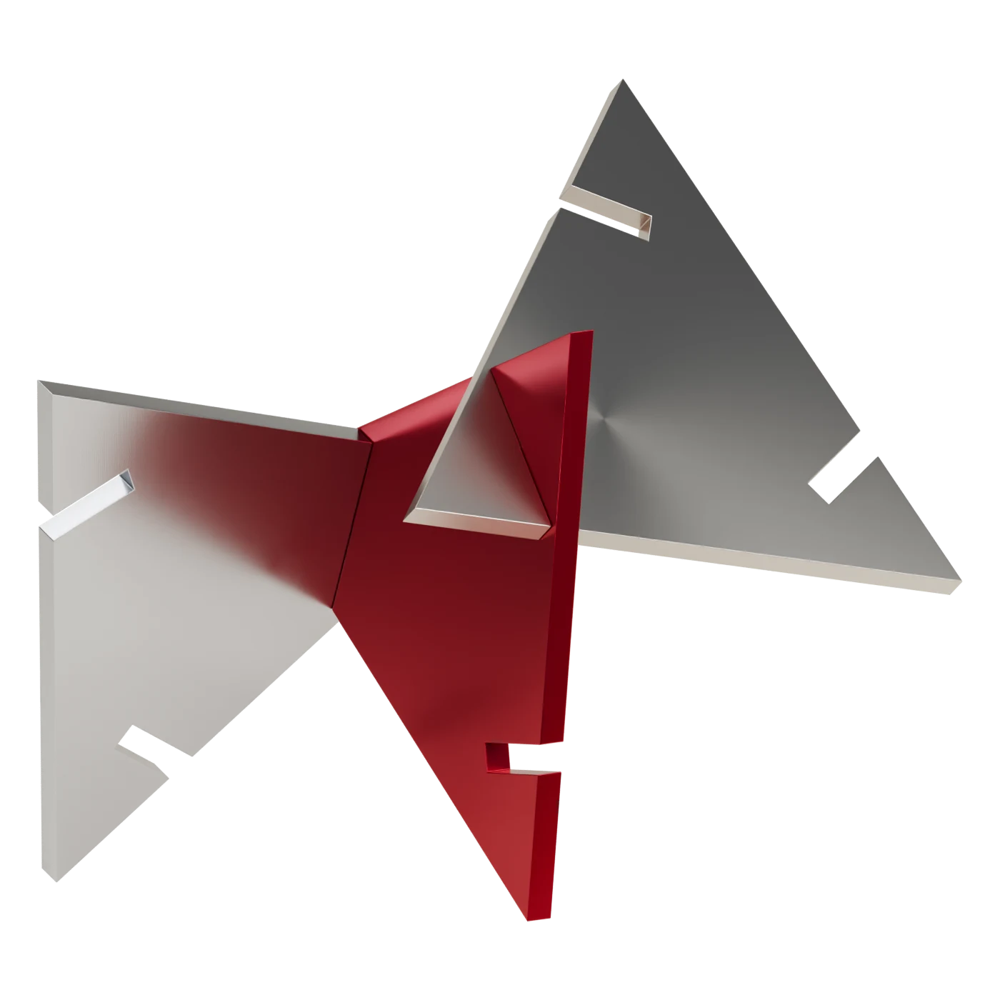

화려함의 정의
화려함을 ‘반복’이라는 언어로 정의하고,
반복의 규칙을 설정해 아이덴티티를 구체화합니다.
BE GREEDILOUS.

반복되는 나.
연결되는 그리디어스.
같은 형태의 반복, 새로운 연결.
나다운 화려함은 계속된다.


화려함을 ‘반복’이라는 언어로 정의하고,
반복의 규칙을 설정해 아이덴티티를 구체화합니다.

같은 형태의 반복, 새로운 연결.
나다운 화려함은 계속된다.